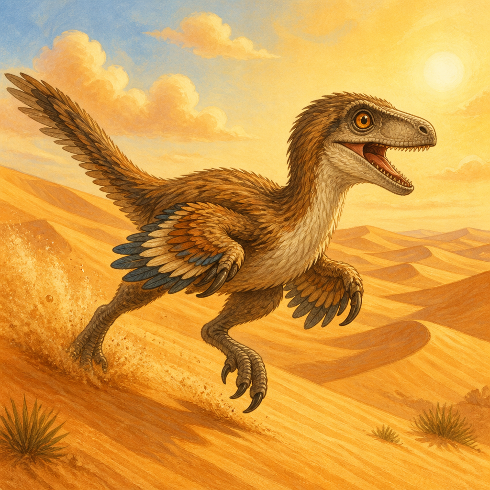
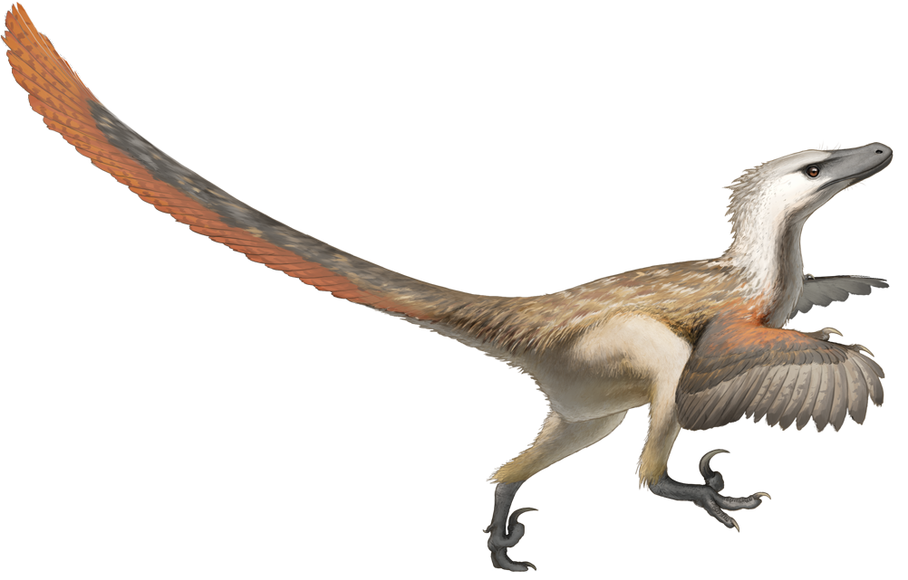
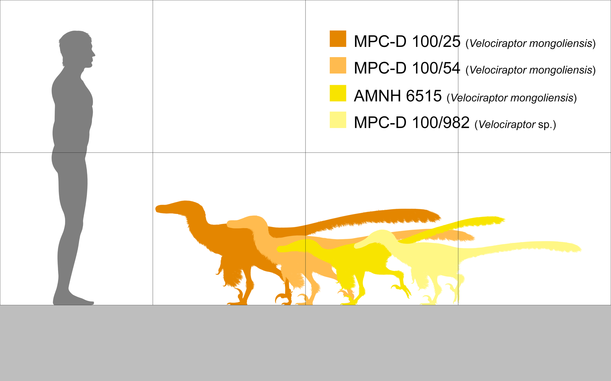
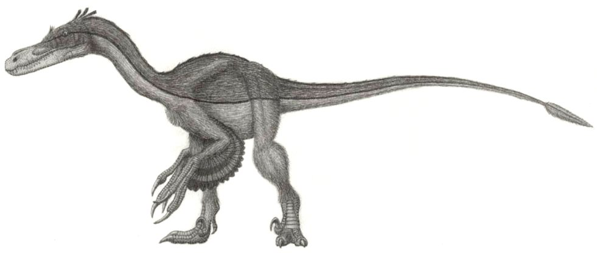
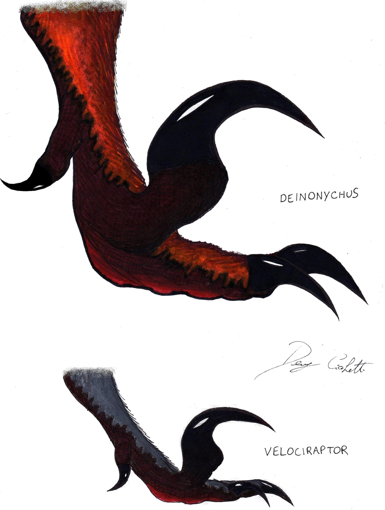
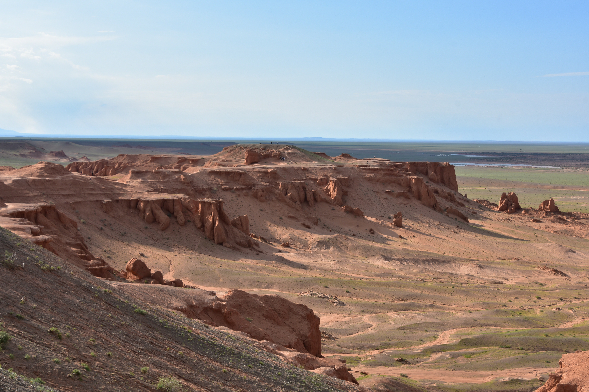
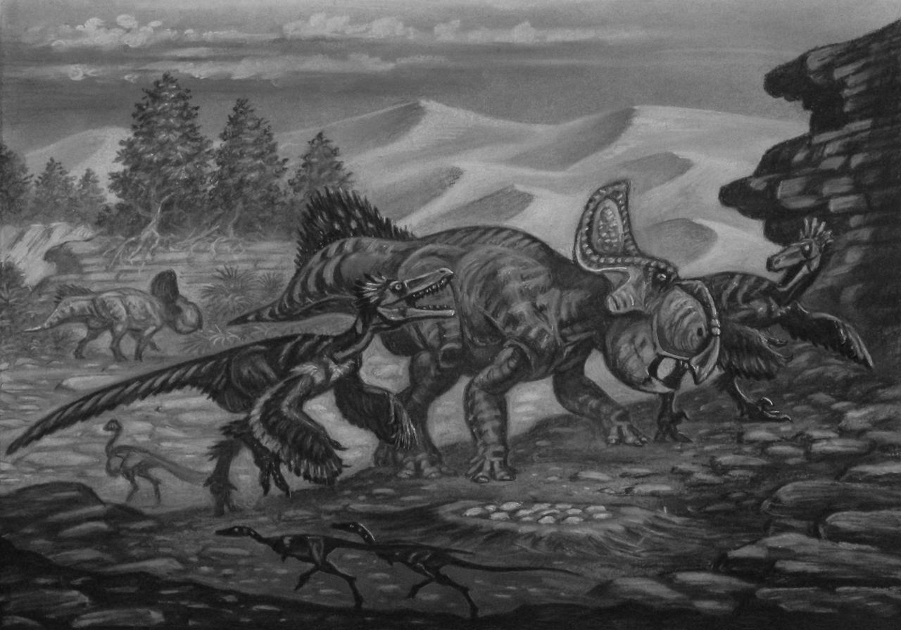
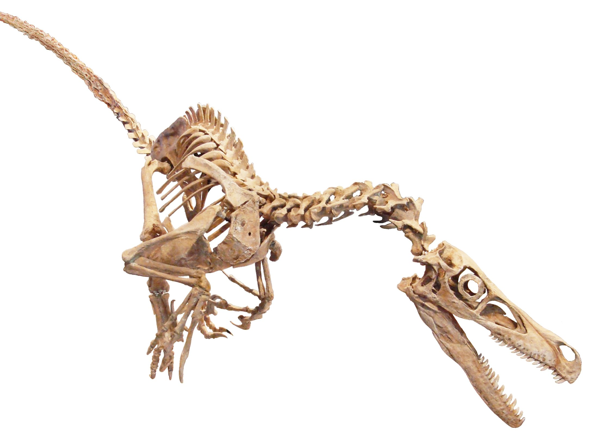
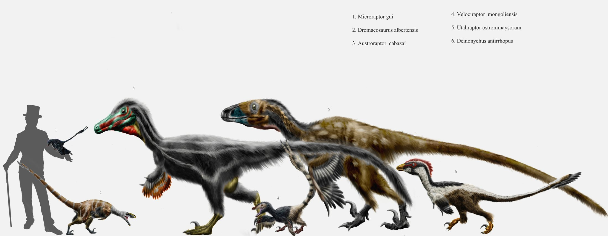

Velociraptor: The Swift Thief
A Real Dinosaur Story

A Real Dinosaur Story
Meet Velociraptor! Its name means 'swift thief.' This little dinosaur lived about 75 million years ago. That is a very, very long time before people were here.


Velociraptor was small -- about the size of a turkey! It stood only as tall as your knee. Its long tail helped it balance when it ran fast on two legs.
Surprise! Velociraptor had feathers! Scientists found special bumps on its arm bones that show where feathers attached. But it could not fly. Its arms were too short.

Look at those claws! Each foot had a big curved claw shaped like a sickle. Velociraptor kept this special claw lifted off the ground. It only used it to grab prey.

Velociraptor lived in a hot, sandy place that is now Mongolia and China. It was dry like a desert, with sand dunes and small streams. Other dinosaurs lived there too.

Velociraptor was a hunter. It ate meat and chased smaller animals. It was smart and fast. One famous fossil shows a Velociraptor fighting a Protoceratops. A sandstorm buried them both!


In 1923, an explorer found the first Velociraptor bones in the Gobi Desert. Since then, scientists have found many more. We learn new things about this dinosaur all the time!
You might have seen big, scaly raptors in movies. But real Velociraptors were small and feathery! The movie ones are based on a bigger dinosaur. Now you know the real story!
